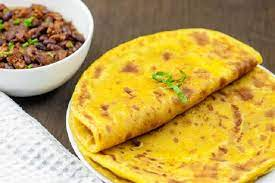

Chapati recipe

Ingredients and steps of seting Chapo
this is Chapati
Ingredients and tools
- 3 cups of flour.
- 11\2 cups of warm water.
- 1 tsps of salt.
- 1 tsp of sugar.
- Vegetable oil.
- Rolling Pin.
- Pan.
Steps on how to prepare chapati.
- Add 3 cups of flour in a bowl.
- Add salt,sugar,2tsp of oil and 11\2 cups of water in a separate jar stir until the salt and sugar dissolve.
- Add the water into the bowl and start mixing.
- Knead the dough for 10mins till its non sticky and 2tsps of oil and continue kneading then cover the dough for 40mins.
- After 40 mins divide the dough into desired equal part and arrange in aflat surfac dusted with flour.
- Dust flour into the flat place and take one balls and start rolling with a rolling pin till the dough is round.
- In a hot pan place the rolled dough and fry each side with little oil until golden brown.
- Place the cooked chapati in a flat plate and cover with aluminium foil.Repeat this steps for the rest of the dough.
- Serve with your Fave stew.